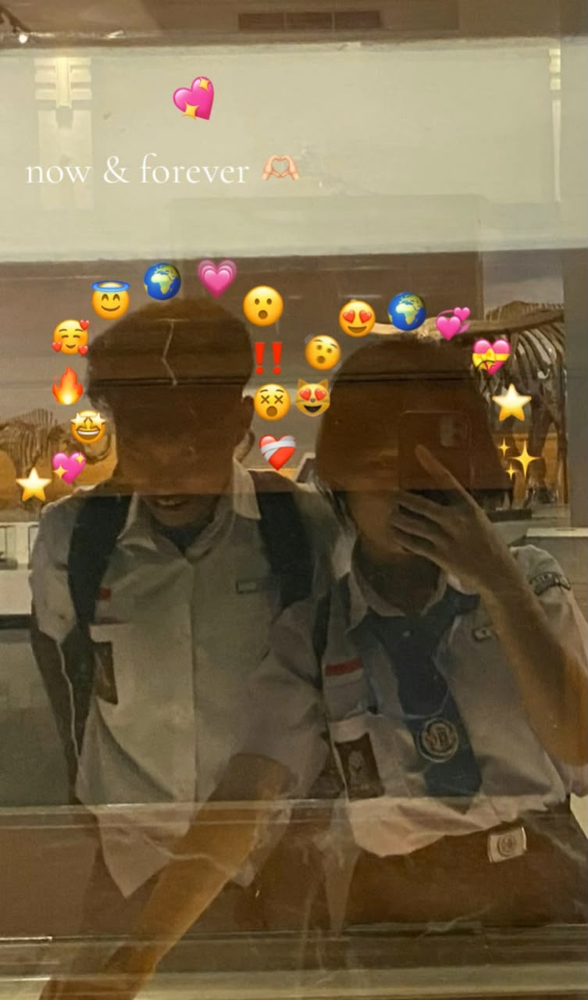
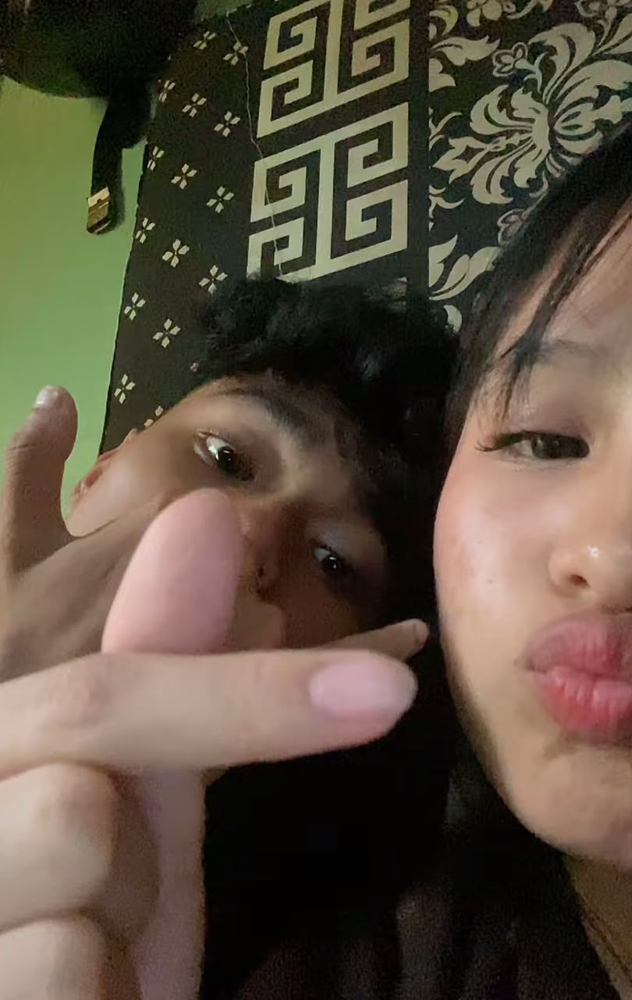
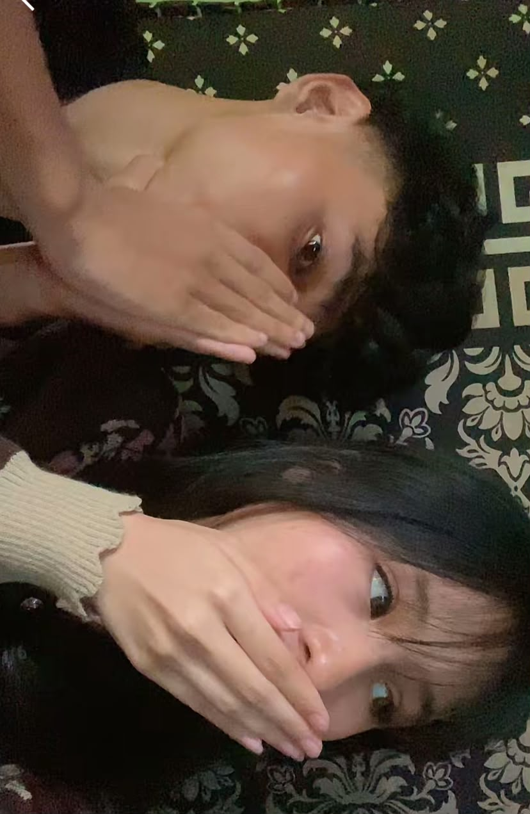
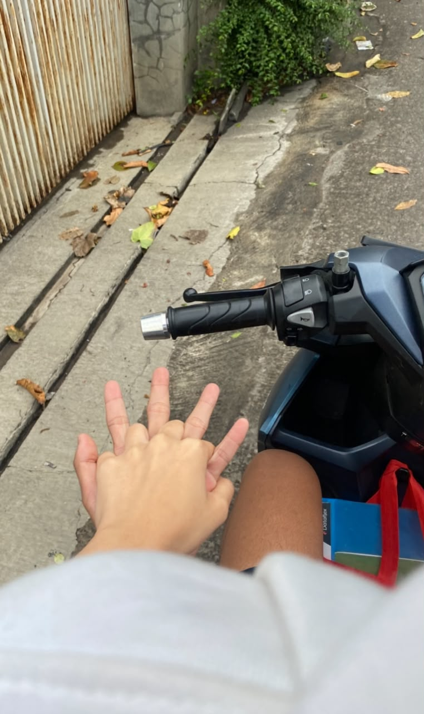

OUR STORY
Kita mungkin sudah tidak berjalan di jalan yang sama, tetapi pernah ada sebuah waktu ketika cerita kita menjadi bagian penting dalam hidup masing-masing.
Dua orang yang pernah saling mengenal, saling menemani, saling berbagi cerita, dan pernah menjadi alasan untuk tersenyum.
MEMORIES
Beberapa momen mungkin hanya berlangsung sebentar, tetapi kenangannya bisa tinggal lebih lama.




OUR JOURNEY
Setiap hubungan punya awal, perjalanan, dan akhirnya sendiri.
Hari ketika cerita kita dimulai. Dari dua orang yang akhirnya saling memilih untuk berjalan bersama dan membuat banyak kenangan yang sampai sekarang masih aku ingat.
Ada banyak hal sederhana yang pernah kita lakukan. Percakapan, tawa, cerita, dan momen-momen kecil yang mungkin terlihat biasa, tapi ternyata menjadi bagian yang berharga dalam hidupku.
Akhirnya kita sampai di titik di mana hubungan ini harus berhenti. Bukan karena semua yang pernah kita jalani tidak berarti, tapi karena keadaan dan waktu membawa kita ke arah yang berbeda.
Ada satu kalimat yang masih aku ingat: "Tunggu desember aku balik." Entah apa yang akan terjadi ketika Desember datang, tapi kalimat itu tetap menjadi sesuatu yang aku simpan dalam ingatan.
A LETTER
Hai, Natasya.
Aku nggak tahu apakah kamu akan membaca tulisan ini sampai selesai atau tidak. Tapi kalau kamu sampai di bagian ini, aku cuma ingin menuliskan beberapa hal yang mungkin selama ini belum pernah aku sampaikan dengan baik.
Terima kasih karena pernah menjadi bagian dari hidupku sejak 23 Oktober 2024. Terima kasih untuk semua waktu, cerita, tawa, dan hal-hal kecil yang pernah kita lewati bersama.
Aku tahu salah satu alasan semuanya berakhir adalah karena aku terlalu sering tidak punya waktu untuk kamu. Mungkin waktu itu aku terlalu sibuk dengan banyak hal sampai lupa bahwa seseorang yang aku sayang juga membutuhkan kehadiranku.
Aku nggak mau menyalahkan kamu karena memilih pergi. Aku juga nggak mau menyalahkan keadaan. Mungkin memang ada hal-hal yang baru kita sadari setelah semuanya sudah terlambat.
Tapi ada satu kalimat yang masih aku ingat:
Entah kenapa kalimat sederhana itu masih terasa berbeda buatku. Mungkin karena di dalamnya ada harapan bahwa suatu hari nanti kita bisa bertemu lagi, walaupun aku sendiri nggak tahu apa yang akan terjadi saat hari itu datang.
Kalau Desember nanti akhirnya kita benar-benar bertemu lagi, aku nggak tahu apakah semuanya akan kembali seperti dulu. Mungkin iya, mungkin juga tidak.
Dan kalau ternyata kita sudah benar-benar menjadi dua orang yang berbeda, aku tetap ingin kamu tahu bahwa aku pernah benar-benar menghargai kehadiranmu dalam hidupku.
Aku tidak menulis ini untuk meminta apa pun.
Aku cuma ingin kamu tahu...
Kalau nanti kamu menemukan kebahagiaanmu di tempat lain, semoga kamu menjaganya baik-baik.
Dan kalau suatu hari kamu mengingat namaku, aku harap yang kamu ingat bukan hanya bagaimana semuanya berakhir, tapi juga bagaimana kita pernah tertawa dan bahagia bersama.
Terima kasih, Natasya.
Untuk semuanya.
— Fadhiil
THE END
Tidak semua orang yang kita sayangi ditakdirkan untuk tinggal selamanya.
Kadang seseorang hadir untuk memberikan cerita, pelajaran, dan kenangan yang akan kita bawa sepanjang perjalanan.
Fadhiil Risnandar × Natasya Boru Pak Pahan